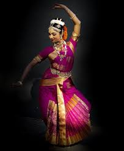
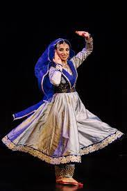
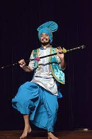
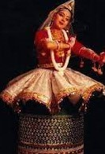
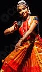
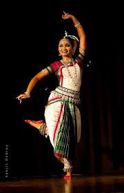

Mohiniyattam is a lasya subgenre of dance, performed in the Kaisiki vritti (graceful style), as discussed in ancient Indian performance arts texts such as the Natya Shastra. More specifically, it is a dance that excels in Ekaharya Abhinaya form.

KUCHIPUDI
Kuchipudi is a dance-drama performance, with its roots in the ancient Hindu Sanskrit text of Natya Shastra. It developed as a religious art linked to traveling bards, temples and spiritual beliefs, like all major classical dances of India.

KATHAK
Kathak is one of the main genres of ancient Indian classical dance and is traditionally regarded to have originated from the travelling bards of North India referred as Kathakars or storytellers.

BHANGRA
Bhangra is the most popular folk dance of Punjab. It represents the liveliness and dynamism of its people. The dance mainly involves men, who perform to the fast beats of drum and music.
CHYAMBYALI DANCE
Dance performed in Himachal Pradesh on special occasions.Chambyali dance(Himachal Pradesh)
Explore famous culture of Chamba,clothes worn in Chamba,traditional dress of Chamba.They are prompt to dance on occasions like, fairs and festivals
PHAG DANCE
Phaag dance is a popular folk dance form of Haryana. This folk dance is performed by the agricultural community of Haryana.

MANIPURI
Manipuri dance is a religious art and its aim is the expression of spiritual values.

BHARATHA NATYAM
Bharatanatyam (Tamil: பரதநாட்டியம்) is a major form of Indian classical dance that originated in Tamil Nadu.

ODDISSI
The Odissi dancers are colorfully dressed with makeup and jewellery. The saree worn by Odissi dancers are brightly coloured, and usually of local silk (Pattasari). It is worn with pleats, or may have a pleat tailor stitched in front, to allow maximum flexibility during the footwork.